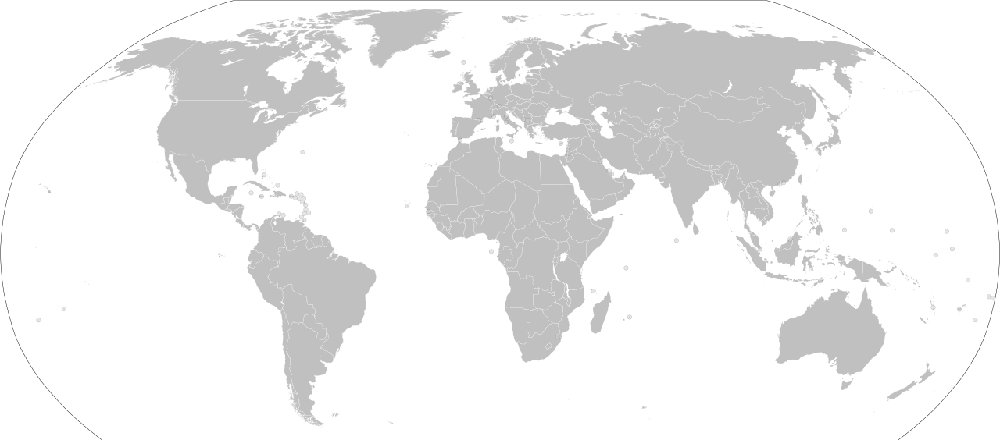

Diferenciar el segmento de valor
Crear una propuesta reconocible que sea más difícil de replicar producto por producto.
ami anytime™ es una marca de consumo de American Foods International diseñada para ofrecer a cadenas y distribuidores seleccionados una plataforma reconocible para crecer en múltiples categorías, mercado por mercado.
La participación de la marca propia en el gasto global en productos de consumo masivo pasó de 15% en 2009 a 22% en 2024. El impulso continuó en 2025: las ventas de alimentos de marca propia alcanzaron €387 mil millones en 17 mercados europeos, mientras las marcas propias en EE. UU. llegaron a $282.8 mil millones, 30% por encima de 2021.

Contexto independiente de la industria; estas cifras no representan ventas, participación ni disponibilidad de ami. NIQ: tendencia global de 15 años · PLMA / NIQ: Europa 2025 · PLMA / Circana: Estados Unidos 2025 · FMI: lealtad del consumidor 2026.
Las marcas nacionales suelen ofrecer poca diferenciación de una cadena a otra. Una marca propia o de representación exclusiva puede fortalecer tu propuesta mediante una identidad coherente, un surtido pensado para los hogares locales y, cuando exista un acuerdo escrito, derechos protegidos por territorio o categoría.
Crear una propuesta reconocible que sea más difícil de replicar producto por producto.
Permitir que la confianza ganada en una categoría impulse la siguiente.
Establecer producto, tamaño, rol y posición de precio para cada mercado.
Agregar categorías cuando la preparación, la demanda y la viabilidad lo respalden.
En países seleccionados, ami crecerá con distribuidores calificados que tengan las relaciones y el alcance operativo para desarrollar una marca nacional. La meta no es listar una sola categoría, sino crear una plataforma que pueda crecer con el tiempo en decenas de categorías cotidianas.
Construir reconocimiento desde las cadenas hasta el comercio de barrio, en múltiples categorías.
Comenzar con alimentos cotidianos y luego sumar categorías aprobadas de alimentos, bebidas, hogar y cuidado personal.
Llevar una marca bilingüe coherente, adaptando el surtido y la propuesta de valor a cada mercado.
Buscar precios adecuados para el mercado que puedan competir con productos locales sin promesas no sustentadas de precio mínimo.
ami está diseñada para ganar escala con un inicio enfocado, ejecución confiable y expansión medida.
Alinear territorio, canales, requisitos locales y viabilidad comercial.
Elegir productos, tamaños y especificaciones aprobados, y definir una arquitectura de valor clara.
Medir disponibilidad, rotación, reposición y respuesta del consumidor antes de la siguiente ola.
ami es desarrollada por American Foods International, una distribuidora de alimentos con sede en Miami que trabaja con cadenas, restaurantes y hoteles en Estados Unidos, Latinoamérica, el Caribe y Asia. AFI reúne abastecimiento internacional, consolidación, documentación, etiquetado y desarrollo de marcas propias en una sola plataforma transfronteriza.
Comparte tu país, canales, alcance, experiencia de importación y categorías de interés. El territorio y cualquier exclusividad se definen únicamente mediante acuerdo escrito.